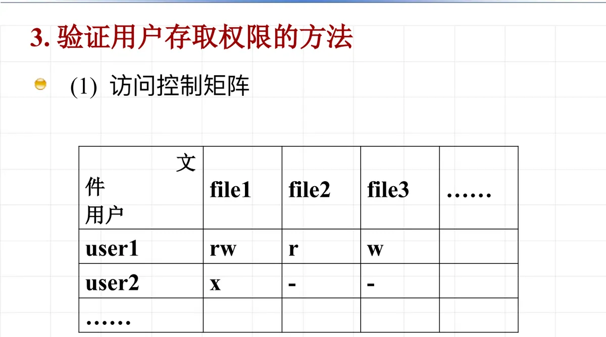
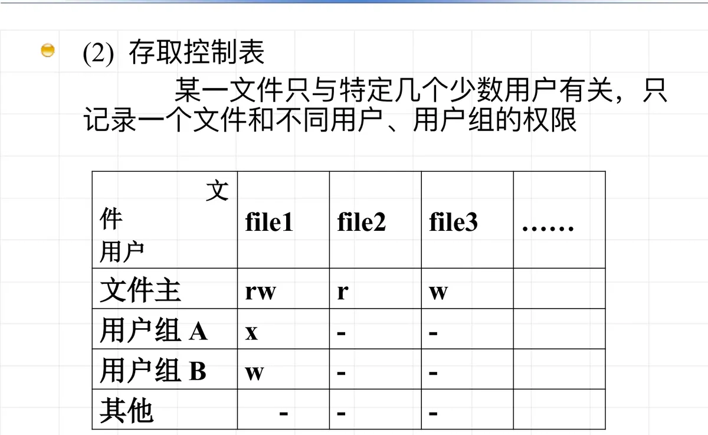
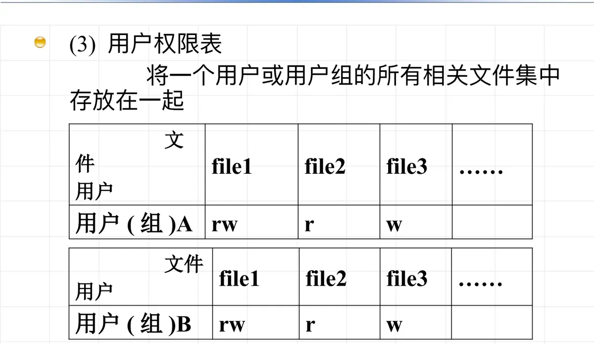

操作系统原理 · 第 9 章 文件系统
9.6 文件共享与安全
文件放进目录、有了名字和物理位置之后，紧接着的问题是「谁能用、能怎么用」。这一节先界定文件共享与文件安全这两个概念的关系——安全问题是共享带来的，再给出用户对文件的几种存取权限，最后梳理验证用户存取权限的五种方法。
1. 文件共享与文件安全
文件共享是指某一个或某一部分文件可以让事先规定的某些用户共同使用。共享让文件的使用价值大大提高，但也把一个新的问题带进了文件系统：文件安全。安全问题是文件共享引发出来的，所谓文件安全，就是文件的保护问题。
文件的保护有明确的双重要求：文件本身不得被未经文件主授权的任何用户存取；而对于授权用户，也只能在允许的存取权限内使用文件。也就是说，保护不只是「拦住外人」，还要对「自己人」区分读、写、执行、删除等不同动作。
2. 存取权限的验证与权限类型
要做到上面这一点，就需要对用户的权限进行验证。所谓存取权限的验证，是指用户存取文件之前，系统先检查该用户的存取权限是否符合规定：符合者允许使用，否则拒绝。
验证的依据是权限的种类。文件系统把用户对文件的操作归纳为以下几种存取权限：
| 权限 | 含义 |
|---|---|
| EXECUTE | 执行文件（x） |
| READ | 读文件内容（r） |
| UPDATE | 修改文件内容 |
| WRITE | 修改、删除、增加文件内容（w） |
| DELETE | 删除文件 |
| CHANGE | 改变文件属性 |
可以看到，权限是一格一格划开的：能读不等于能改，能改内容也不等于能删除文件或改变文件属性。系统在目录项中保存的存取控制信息，正是按这些权限，分别记录文件主与核准的其他用户各自被允许做什么。
注记：其中的 x、r、w 三种权限，在 UNIX/Linux 等系统中就是文件权限位最常见的三组取值，分别对应这里的 EXECUTE、READ、WRITE。
3. 验证用户存取权限的五种方法
权限怎么记、记在哪里，直接决定了验证的开销和灵活性。常见的做法有以下五种，前三种是「记权限」的不同组织方式，后两种走的是「验证身份 / 加密内容」的路子。
（1）访问控制矩阵
最直观的做法是列一张二维矩阵：一个方向对应系统中的用户，另一个方向对应文件，矩阵中交叉位置上的元素给出「这个用户对这个文件拥有什么权限」。它的表达能力最完整，但矩阵通常非常稀疏（绝大多数用户与绝大多数文件无关），全量存下来空间开销大，所以实际系统往往对它做压缩，衍化出下面两种表。

（2）存取控制表
访问控制矩阵按文件的方向压缩，就得到存取控制表：某一文件只与特定的少数几个用户有关，于是只记录「一个文件」与「不同用户、用户组」的权限。每个文件带一张自己的小表，表里列出被授权者及其权限，验证时比较的是「这个文件的这张表」。

（3）用户权限表
换个方向压缩，就得到用户权限表：把一个用户或用户组的所有相关文件集中存放在一起，验证时先找到这个用户，再在他名下的文件清单里查权限。用户权限表适合「一个用户要用很多文件」的场景，与存取控制表正好互补。

（4）口令
前面的三种办法都要维护并检索权限表；口令走的是另一条路：给文件（或文件的一部分）配上一个口令，用户必须给出口令才能存取。它的优点是开销小、实现简单，缺点是口令一旦泄露保护就失效，而且口令本身也需要妥善保管。
（5）密码
密码则从内容本身入手：文件以密文形式存放，只有掌握密钥的用户才能把它还原成可读的明文。与口令只「守门」不同，密码即使文件被别的途径拿走，内容仍然不可读，因此保护强度更高，代价是加解密带来的时间开销。
本节小结
- 文件共享是让事先规定的某些用户共同使用某些文件；它引发了文件安全问题，而文件安全说到底就是文件的保护。
- 保护的要求有两面：未授权的用户不得存取文件；已授权的用户也只能在允许的权限范围内使用文件。
- 实现保护的机制是存取权限的验证：存取之前检查用户权限是否符合规定，符合则允许，否则拒绝。
- 权限被细分为 EXECUTE（x）、READ（r）、UPDATE、WRITE（w）、DELETE、CHANGE 等类型，读、写、执行、删除、改属性彼此独立。
- 验证权限的五种方法中，访问控制矩阵最完整但稀疏；按文件压缩成存取控制表，按用户压缩成用户权限表；口令用「答对才放行」换取低开销，密码用加密内容换取更高强度。
- 共享与安全是同一件事的两面：本节讲的是「谁可以访问」，下一节讲的是「文件本身如何操作、以及如何在意外损坏后恢复」——文件操作与文件备份。